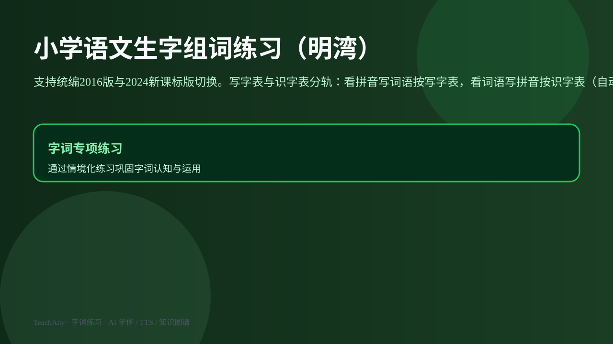

ABT Story
为什么需要「按进度」组词练习？
And孩子已学不少生字，家长想在家巩固组词。
But词里常有「大、子」等伴读字，整张卷子灰字太多，孩子误以为没学过。
Therefore按写字表课次生成练习，并区分三种字格。
真实场景：明湾家长每晚根据学校进度，打印一页「看拼音写词语」给孩子练。
怎样按「学到第几课」自动生成可打印的拼音词语练习，又不错把伴读字当成未学？

选一个方向，AI 学伴会围绕你的问题给提示。
选择或输入后，本课会围绕你的问题展开。
真实场景：明湾家长每晚根据学校进度，打印一页「看拼音写词语」给孩子练。
看拼音写词语时，选出哪个是本课已学写字表生字的正确呈现？
本工具分轨维护统编版 写字表与识字表（258 课、1144 组词）。看拼音写词语只按写字表进度出题；看词语写拼音按识字表进度，并自动把截至当前课已学的写字表生字并入识字范围。
每个字仍分三种呈现：已学（考查）留空、课外伴读正常显示、未学灰显并标拼音照抄——未学判定随题型分别对照写字表或识字表（含写字同步），避免整张卷子灰字过多。
选词时默认「本课生字为主」：优先出现含有本课新字的词语；若题量不足，可切换到「全部已学生字」，或在「临时补充词语」里按「词语|拼音|锚点字」格式加入学校周测词。
第一问：进度选对了吗？年级、册次、课次要与学校教学一致。进度偏早，会把还没学的写字表生字标成灰字；进度偏晚，会少练本课该写的字。
第二问：题型选对了吗？「看拼音写词语」练书写；「看词语写拼音」练拼音拼写。可勾选「显示答案区」供家长核对。
第三问：题量够吗？默认 16 题，可调到 4～40。不够就「重新生成」换一批词，或扩大选词范围。
假设孩子学到二年级上册第 5 课，词库给出「大地 mǐ dì」。
「地」在写字表里且已学 → 拼音格显示 dì，田字格留空，让孩子写「地」。
「大」不在 1～6 年级写字表 → 属于识字伴读，拼音格显示 dà，汉字正常显示「大」，不灰显，也不留空考查。
若误把「大」当成未学灰字，孩子会以为没学过；本课规则就是避免这种误判。打印后家长只需看：留空的是今天要写的，灰的才是还没学到的写字表生字。

记忆锚点：先选进度，再打印；伴读字不是未学。
若字格留空 → 该字在「当前进度」之前的写字表课次中已出现，属于考查对象。
若字正常显示、非灰色 → 多为识字伴读字，帮助孩子读出整词，不要求本会书写。
若字灰显 → 该字在写字表中，但排在当前课次之后，尚未教学，照抄即可。

词语「大地」中，「地」是写字表已学字，「大」是常见伴读字。
若视频未部署，请直接阅读上方规则卡与互动小测。
在下方选择年级、册次、课次，生成 A4 打印预览。打印时左侧设置栏会自动隐藏。
向老师确认本周课次与 5～10 个校测词语，在工具中选好年级册次课次，把词语按「词语|全拼|含本课字的锚点」填入临时补充区，生成 12～16 题「看拼音写词语」，打印后让孩子完成，再用答案区核对伴读字与灰字是否合理。
题量只有 8 道，你想多练本课生字，第一步应？
本课挂在「其他知识」树节点 ext-7f3a91c2，与拼音、识字、写字等课标节点相连。